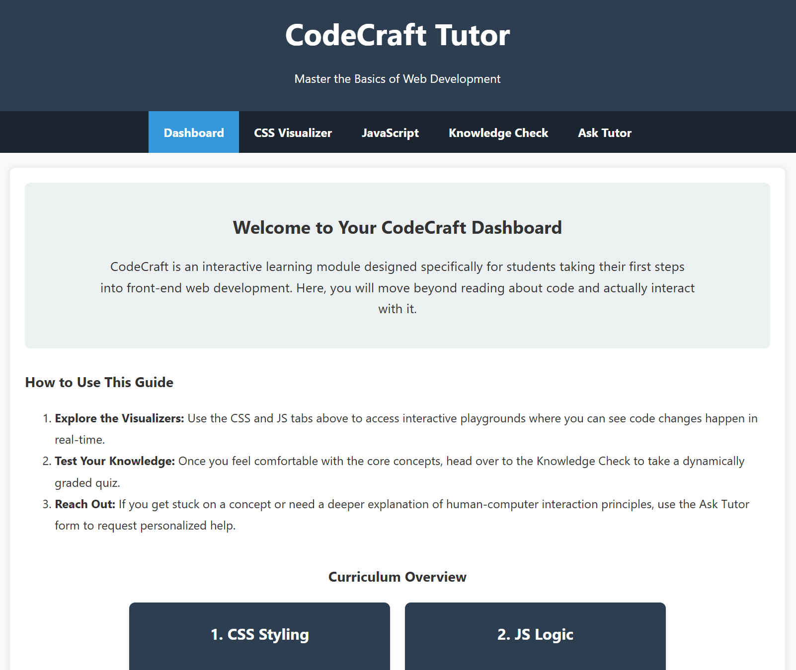

Peer Review 2
Palaparthi, Andrews

My Evaluation
- Checklist Review:
- Submission leads directly to page:✅
- No spaces/uppercase in file names:✅
- Readable contrast and fonts:✅
- Uses standard CSS:✅
- CRAP Principles:
- Contrast: ✅ Perfectly legible and visually aesthetic!! I was impressed by how professional the site looks. Only thing I would point out is that the trademark hyperlink in the footer could be a different color for easier visibilty.
- Repetition: ✅ Great consistency in fonts and color theme. Everything is unified and the theme matches the topic excellently. Great work!
- Alignment: ✅ All text is aligned in their assigned areas and nothing is randomly placed. The website has a very polished look to it
- Proximity: ✅ Everything is evenly spaced and appropiately divided. No clutter to be found here
- Header / Main / Footer present: ✅
- Header uses H1 correctly: ✅
- H2 used for page title: ✅
- Brand tagline present: ✅
- Footer includes validation/menu: Validation seems to be missing. Easy fix though
- Assignment Requirements:
- Navigation works properly & slogan is present✅
- Images load and are sized correctly ✅
- Links are functional ✅
- Polished, professional layout across pages ✅
- Stop: Using black text and a white background, or at least that's the professor's preference for this course.
- Start: Perhaps adding an accent color & icon. Perhaps add some type of calendar/table showcasing availability and/or events ^-^
- Continue: killing it with this assignment!!!